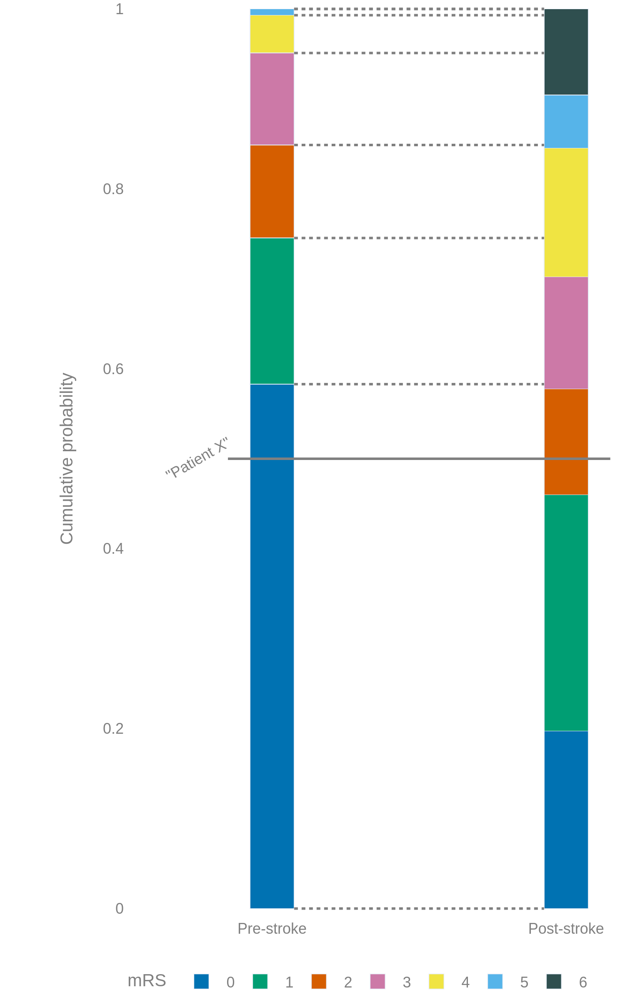
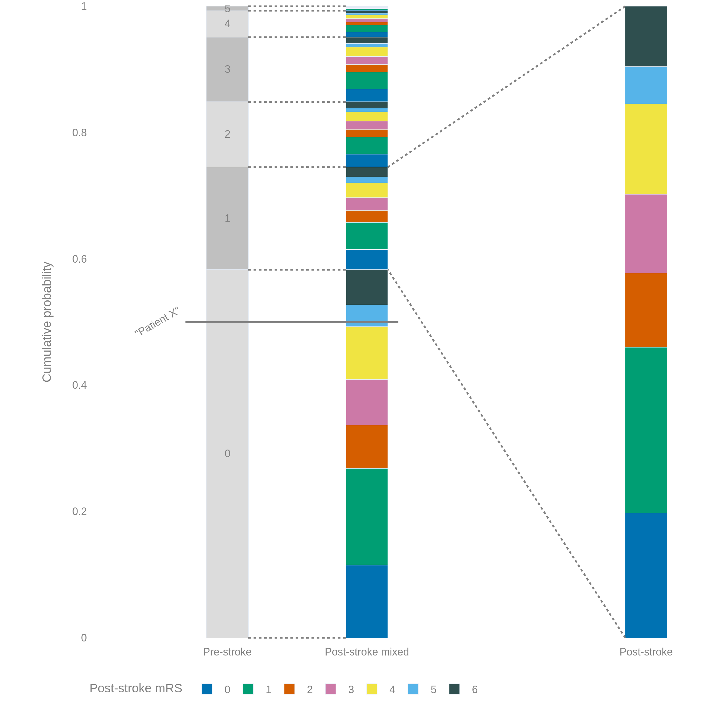
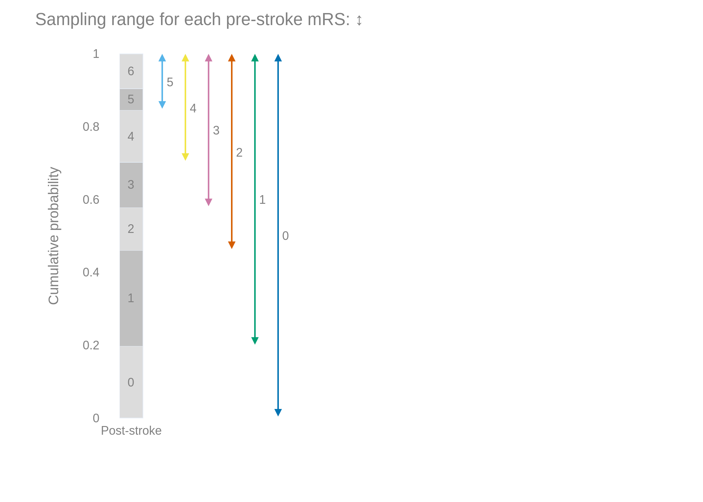
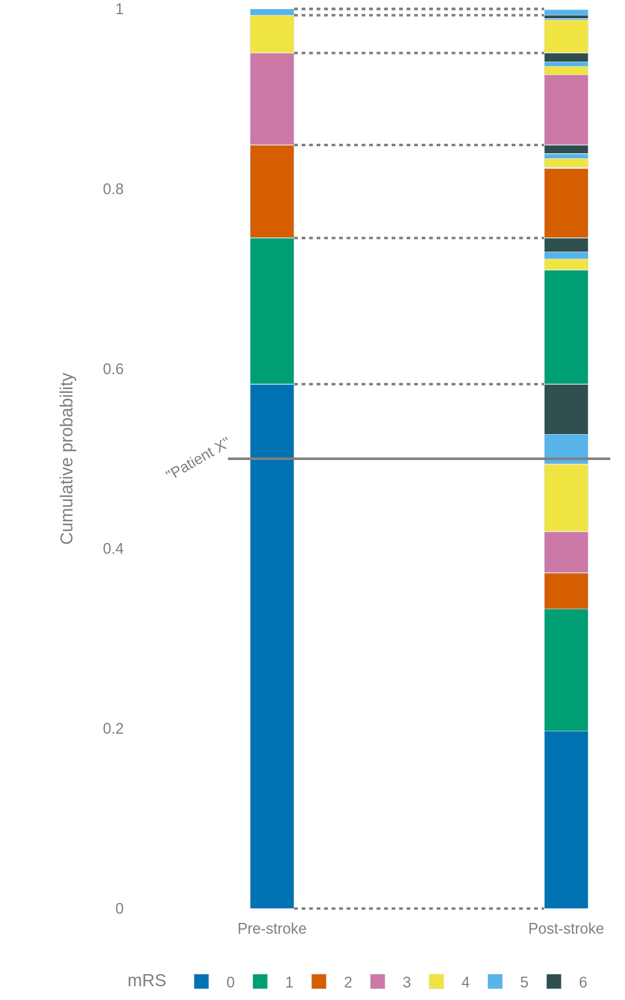

Outcome resampling#
The mRS distributions defined for pre- and post-stroke populations are useful for looking at the changes of outcomes in the population as a whole, but do not make sense when predicting the post-stroke outcome of an individual patient.
Data source#
This notebook is comparing distributions for the pre-stroke nLVO and post-stroke treated nLVO with IVT deaths.
import pandas as pd
import numpy as np
mrs_dists_bins = pd.read_csv(
'data/mrs_dist_probs_bins.csv',
index_col='Stroke type')
mrs_dists_bins.loc[['pre_stroke_nlvo', 'no_effect_nlvo_ivt_deaths']]
| 0 | 1 | 2 | 3 | 4 | 5 | 6 | |
|---|---|---|---|---|---|---|---|
| Stroke type | |||||||
| pre_stroke_nlvo | 0.582881 | 0.162538 | 0.103440 | 0.102223 | 0.041973 | 0.006945 | 0.000000 |
| no_effect_nlvo_ivt_deaths | 0.197271 | 0.262729 | 0.117583 | 0.124669 | 0.142991 | 0.059211 | 0.095546 |
mrs_dist_pre_stroke = mrs_dists_bins.loc['pre_stroke_nlvo']
mrs_dist_post_stroke = mrs_dists_bins.loc['no_effect_nlvo_ivt_deaths']
“Patient X” method#
We can pick any point along the y-axis and label it “Patient X”. This “Patient X” will fall into one of the mRS bins in the pre-stroke distribution. By drawing a horizontal line across to the post-stroke distribution, we can find the same patient’s post-stroke mRS.
Initial distributions#
The main distributions were calculated based on whole populations of people. With very many “Patient X” readings, the sampled pre- and post-stroke mRS values will recreate the initial distributions.
{kind=link}
However, this method is odd when considering only one individual patient because the post-stroke options are limited. For example, here any pre-stroke mRS=0 can only become a post-stroke mRS=0, 1, or 2.
Random post-stroke distribution#
Instead of the above, we can copy the whole post-stroke distribution multiple times and mimic the spacing of the pre-stroke distribution.
This allows any pre-stroke mRS bin to select any post-stroke mRS bin, and with sufficiently many “Patient X” the sampled bins will recreate the initial distributions.
{kind=link}
Now any pre-stroke mRS can become any post-stroke mRS. This is unrealistic. It is now possible for a patient to become healthier post-stroke than before their stroke…!
Avoiding oversampling#
It would be possible to repeat the above method and copy over multiple copies of the post-stroke distribution but to only keep the post-stroke mRS bins that are the same as or higher than the pre-stroke bin. However, this would cause a problem with oversampling.
{kind=link}
The post-stroke mRS=0 bin is only sampled by the pre-stroke mRS=0 bin, but the post-stroke mRS=5 bin is sampled by all pre-stroke bins. When very many “Patient X” lines are drawn, the sampled distributions will include too many of the higher mRS values and not enough of the lower values.
Resampling#
To avoid these problems, we can instead start with the random post-stroke distribution from before. We know that this will recreate the initial post-stroke distribution, and we just need to switch some bins around so that the post-stroke mRS cannot improve on the pre-stroke value.
{kind=link}
The method:#
Look at pre-stroke mRS “A” and the post-stroke bins currently assigned to it.
Look at post-stroke mRS “B”, the lowest post-stroke bin where “B” < “A”. Call this “Bin B”.
Look at “Bin C”, which has pre-stroke mRS “B” and post-stroke mRS “A”.
If “Bin C” is at least as big as “Bin B”, swap their contents.
Or if “Bin C” is smaller than “Bin B”, swap as much of their contents as possible. Then select a new “Bin D” for pre-stroke mRS “D” where “D” < “A” and post-stroke mRS “A”, and swap the remaining contents of “Bin B” with “Bin D”. Repeat until “Bin B” is empty.
Example 1:#
Pick pre-stroke mRS=1.
We need to remove post-stroke mRS=0 (“Bin B”) from this section.
Check the size of the post-stroke mRS=1 bin in the pre-stroke mRS=0 section (“Bin C”).
“Bin C” is larger than “Bin B”, so move the contents of “Bin B” into “Bin C” and move the same amount of “Bin C” back to “Bin B”.
Now the final distribution has no pre-stroke mRS=1 going to post-stroke mRS=0, and a higher proportion of pre-stroke mRS=0 going to post-stroke mRS=0.
{kind=link}
Code for resampling#
def resample_dists(mrs_dist_pre_stroke, mrs_dist_post_stroke):
# Make an empty 7x7 array.
all_mrs_dists = np.empty(
(len(mrs_dist_pre_stroke), len(mrs_dist_post_stroke)), dtype=float)
# Fill the array so that each row has a copy of the pre-stroke dist
# but scaled down so that instead of summing to 1,
# each copy sums to the size of a bin in the post-stroke dist.
for i in range(len(mrs_dist_post_stroke)):
all_mrs_dists[:, i] = mrs_dist_pre_stroke * mrs_dist_post_stroke[i]
# Swap some bins around to prevent initial high mRS becoming lower
# after stroke.
for i_pre in range(len(mrs_dist_pre_stroke)):
for i_post in range(i_pre + 1, len(mrs_dist_post_stroke)):
# Keep track of which pre-stroke mRS distribution we're
# trying to move stuff into.
mRS_pre = i_pre
# Condition for exiting the "while" loop is met when
# all of the bin is shifted to somewhere else.
success = 0
while success == 0:
# The post-stroke mRS distribution for the patients
# who have pre-stroke mRS=x, and
# the size of the mRS=y bin in this distribution:
bin1 = all_mrs_dists[mRS_pre][i_post]
# The post-stroke mRS distribution for the patients
# who have pre-stroke mRS=y, and
# The size of the mRS=x bin in this distribution:
bin2 = all_mrs_dists[i_post][i_pre]
# We want to move the whole of bin 2 into bin 1.
# Is there enough room?
room_left = bin1 - bin2
if room_left >= 0.0:
# All of the bin can be moved from the high bin to the low bin.
val_to_shift = bin2
success = 1
else:
# Move as much as we can, and go around this
# "while" loop another time.
val_to_shift = bin1
# Move the bin contents within the post-stroke dist row:
all_mrs_dists[i_post][i_pre] -= val_to_shift
all_mrs_dists[i_post][i_post] += val_to_shift
# Move the bin contents within the pre-stroke dist row:
all_mrs_dists[mRS_pre][i_post] -= val_to_shift
all_mrs_dists[mRS_pre][i_pre] += val_to_shift
if success == 0:
# Next time round the loop, look at the previous bit.
mRS_pre = 0 if mRS_pre == i_pre else mRS_pre + 1
return all_mrs_dists
all_mrs_dist_post_stroke_resample = resample_dists(
mrs_dist_pre_stroke, mrs_dist_post_stroke)
pd.DataFrame(all_mrs_dist_post_stroke_resample)
| 0 | 1 | 2 | 3 | 4 | 5 | 6 | |
|---|---|---|---|---|---|---|---|
| 0 | 0.197271 | 0.135734 | 0.040066 | 0.045908 | 0.075067 | 0.033143 | 0.055692 |
| 1 | 0.000000 | 0.126995 | 0.000000 | 0.000000 | 0.012214 | 0.007799 | 0.015530 |
| 2 | 0.000000 | 0.000000 | 0.077517 | 0.000876 | 0.009856 | 0.005308 | 0.009883 |
| 3 | 0.000000 | 0.000000 | 0.000000 | 0.077885 | 0.009384 | 0.005187 | 0.009767 |
| 4 | 0.000000 | 0.000000 | 0.000000 | 0.000000 | 0.036470 | 0.001492 | 0.004010 |
| 5 | 0.000000 | 0.000000 | 0.000000 | 0.000000 | 0.000000 | 0.006281 | 0.000664 |
| 6 | 0.000000 | 0.000000 | 0.000000 | 0.000000 | 0.000000 | 0.000000 | 0.000000 |
Each row X of this table is the post-stroke distribution of the pre-stroke mRS X.
Each column Y of this table is the distribution of pre-stroke mRS bins that contribute to the post-stroke mRS Y. Only rows where pre-stroke mRS <= Y have non-zero values in these columns because patients cannot become healthier.